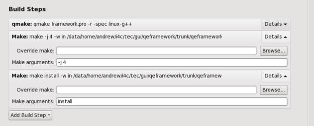

EPICS Qt at GitHub
Quick Road-map for Code Free GUI Development
Getting Started - Headless Build
Getting Started - qtcreator Build
Welcome to EPICS Qt at GitHub.
EPICS Qt is a layered framework based on Qt for accessing Experimental Physics and Industrial Control System (EPICS) data using Channel Access (CA). It has been designed for rapid development of control system graphical interfaces, initially developed at the Australian Synchrotron.
The QE Framework can be used in three ways:
· Code Free GUI systems using Qt's Designer application with the QE Framework plugin to design GUIs, and the QEGui application to present GUIs to users.
· Code Rich GUI development using Qt's Integrated Development Environment with the QE Framework widgets and data objects to design GUI applications.
· Console application development using Qt's Integrated Development Environment with the QE Framework data objects to design console applications that can access EPICS data.
Note, there are many variations to the above, such as using another Integrated Development Environment like Eclipse, or developing new plugin widgets to implement desired functionality, then using those widgets within a code free GUI development.
Other documents you may be interested in are:
· Ensure you have: EPICS, Qt and QWT installed – see Prerequisites for EPICS Qt below.
· Download source – see Download source code and documentation below.
· Set up build environment, i.e. the RELEASE files – see Modify RELEASE files; and 2 environment variables see or environment variables.
· Build framework – see Build Plugin Library and Display Manager.
· Build qegui (display manager) – see Build Plugin Library and Display Manager.
· Set up run time environment (environment variables) see environment variables.
· Run qegui.
This section describes how the repositories
at GitHub are organised.
The transfer of the EPICS Qt framework from SourceForge to GitHub has been an ideal
opportunity for a few organisational changes. These are outlined below. There
were no major functionality changes per se as part of the initial transfer.
However since the transfer this is not the case.
The major transfer change was that EPICS Qt was been split into a number of
components, each managed in its own GitHub repository.
The two primary repositories are the QE
Framework repository which provides the framework functional and
plugin libraries and the QEGui Display Manager repository which provides
the qegui display manager. The documentation is included within the
qeframework repository. Also new and significant is the qtepics.github.io
repository that holds this and other useful documentation and the qeBinaries repository which
contain pre built tar-balls (for Linux) and msi files (for windows).
The other repositories are optional, and basically provide examples of using or
extending the framework.
There is no longer an epicsqt.pro overall project file to build all sub
projects. Each code repository still has its own project file(s), e.g.
framework.pro, QEGuiApp.pro, and these may be opened by qtcreator in
order to build each component as could be done previously.
However, each component is now located within its own EPICS top directory that allows the component to be readily and headlessly built in a much more EPICS-like fashion by just calling make from within the top directory. Under-the-covers, each component's application directory's own Makefile essentially invokes qmake and then make on the generated Makefile.
In the case of qeframework, the include files are placed in top/include and the shared library/dll file is placed in top/lib/epics_host_arch. The qeframework plugin library is located in top/lib/epics_host_arch/designerh . In the case of qegui, this is located in top/bin/epics_host_arch. The use of the environment variable QE_TARGET_DIR may still be used to override this.
Each code repository has a r3.4.2 tag which corresponds to the last SourceForge 3.4.2 release. The latest release is 3.6.2, and each repository has a corresponding r3.6.2 tag.
The EPICS QT Framework is free software: you can redistribute it and/or modify it under the terms of the GNU Lesser General Public License as published by the Free Software Foundation, either version 3 of the License, or (at your option) any later version.
The EPICS QT Framework is distributed in the hope that it will be useful, but WITHOUT ANY WARRANTY; without even the implied warranty of MERCHANTABILITY or FITNESS FOR A PARTICULAR PURPOSE. See the GNU Lesser General Public License for more details.
You should have received a copy of the GNU
Lesser General Public License along with the EPICS QT Framework. If not, see https://www.gnu.org/licenses/.
Please visit the EPICS web page for details, or speak to your local EPICS expert.
Versions 4.6, 4.8.4, 5.6, 5.7, 5.9 and 5.10 have been successfully used at the Australian Synchrotron. Version 4.8.4 is the earliest version we now actively support. For a new user I would recommend Qt 5. Qt is available from https://www.qt.io/.
The version must be compatible with your version of Qt. Please visit http://qwt.sourceforge.net/.
Please visit EPICS Archiver Appliance support documentation.
The following configuration combinations have all recently been built at the Australian Synchrotron.
|
Host OS |
Compiler |
EPICS HOST ARCH |
EPICS |
QWT |
QT |
EpicsQt |
|
Linux CentOS release 6.8 |
g++ (GCC) 4.8.2 |
linux-x86_64 |
3.14.12.4 |
5.1.1 |
4.6.2 |
3.3.1 |
|
Linux CentOS release 6.8 |
g++ (GCC) 4.8.2 |
linux-x86 |
3.14.12.4 |
5.1.1 |
4.6.2 |
3.3.1 |
|
Linux CentOS release 6.9 |
g++ (GCC) 4.4.7 |
linux-x86_64 |
3.15.5 |
5.1.1 |
4.8.4 |
3.4.2 |
|
Linux CentOS release 7.3.1611 |
g++ (GCC) 4.8.5 |
linux-x86_64 |
3.14.12.4 |
6.1.1 |
4.8.5 |
3.3.1 |
|
Linux CentOS release 7.3.1611 |
g++ (GCC) 4.8.5 |
linux-x86_64 |
3.15.5 |
6.1.3 |
5.7.1 |
3.4.2 |
|
Linux CentOS release 7.3.1611 |
g++ (GCC) 4.8.5 |
linux-x86_64 |
3.15.5 |
6.1.3 |
5.8.0 |
3.4.3 |
|
Linux CentOS release 7.3.1611 |
g++ (GCC) 4.8.5 |
linux-x86_64 |
3.15.5 |
6.1.3 |
5.9.0 |
3.4.3+ |
|
Windows 7 |
g++ 4.6.2 |
win32-x86-mingw |
3.14.12.3 |
6.0.1 |
4.8.5 |
3.4.2 |
|
Windows 7 |
g++ (i686-posix-dwarf-rev1, Built by MinGW-W64 project) 4.9.2 |
win32-x86-mingw |
3.14.12.4 |
6.1.3 |
5.6 |
3.4.2 |
|
Windows 7 |
MSVC 14.0, 64 bit |
windows-x64 |
3.14.12.3 |
6.1.3 |
5.7.0 |
3.4.3 |
|
Windows 8.1 |
mingw 4.9.2 32 bit |
win32-x86-mingw |
3.15.3 |
6.1.3 |
5.5.1 |
3.4.3 |
|
Windows 10 Pro |
Microsoft Visual C++ Compiler 15.0 (amd64) |
windows-x64 |
3.15.5 |
6.1.3 |
5.9 |
3.4.3+ |
|
Debian testing (Stretch) |
GCC 6.3.0 |
linux-x86_64 |
3.15.5 |
6.1.2 |
4.8.7 |
3.4.2+ |
Please visit Andrew Rhyder's Windows 10 notes for more
information.
There is a lot useful information in QE_GettingStarted.pdf, however this document still refers to the old structure and to SourceForge as the source, so must be read taking that into account.
The commands shown here illustrate downloading and building epicsQt in the directory /home/user/qtepics. This is just for the purposes of providing example commands. You are free to to down load and install anywhere on your system. Replace the green part of the path in the examples below to suit your own environment.
Note: This instructions are currently Linux-centric, however Windows users should have no trouble translating these to the Windows equivalent.
Clone the framework and the qegui repositories.
mkdir -p /home/user/qtepics
cd /home/user/qtepics
git clone https://github.com/qtepics/qeframework.git
git clone https://github.com/qtepics/qegui.git
Modify /home/user/qtepics/qeframework/configure/RELEASE file such that:
QE_FRAMEWORK=/home/user/qtepics/qeframework
EPICS_BASE=<a reference your EPICS base>
Modify /home/user/qtepics/qegui/configure/RELEASE file such that:
QE_FRAMEWORK=/home/user/qtepics/qeframework
EPICS_BASE=<a reference your EPICS base>
Define EPICS_HOST_ARCH (e.g. export
EPICS_HOST_ARCH=linux-x86_64)
Define QWT_INCLUDE_PATH (e.g. export QWT_INCLUDE_PATH=/usr/include/qwt)
Optional: Define QE_FFMPEG if mpeg streaming is required (on Windows,
this must point to the FFMPEG directory; on Linux just being defined is
sufficient).
Optional: Define QE_CAQTDM if integration of PSI's caQtDM into QEGui is
required. If you want caQtDM integrated, download and build it and define the
environment variable QE_CAQTDM to point to the caQtDM_Project directory.
Optional - deprecated: Defining QE_TARGER_DIR forces libraries, header files and binaries to be built/installed into the nominated directory. This is not recommended and included for legacy purposes only. Note: If this environment variable is defined, you must modify the QE_FRAMEWORK definitions in the configure/RELEASE files to be consistent with this variable.
When building in headless mode, the qmake program is invoked to generate a Makefile based on the project .pro file. Ensure that your PATH environment variable results in required version of qmake being available. For some versions of Qt 4, the qmake program is known as qmake-qt4. In this case it will be necessary to "fake" it, e.g.:
cd ${HOME}/bin
ln -s /usr/bin/qmake-qt4 qmake
or something similar. Also, qmake is called without the -spec option defined and relies on the default spec file (e.g. linux-g++) being suitable. If this is not the case then you must “fake” the qmake command to suit your environment. Alternatively, one could also modify the make files:
/home/user/qtepics/qeframework/qeframeworkSup/Makefile
/home/user/qtepics/qeframework/qepluginApp/Makefile
/home/user/qtepics/qegui/qeguiApp/Makefile
to suit your environment.
Since commit 69d1623 (qeframework repository), the _MINGW macro is automatically defined TRUE if the EPICS_HOST_ARCH is either “win32-x86-mingw” or “windows-x64-mingw”. See the /home/user/qtepics/qeframework/qeframeworkSup/project/framework.pro project file (approximately line 86) for details.
For windows, you may have to modify the line (approximately line 244) to suit your version of QWT
win32:LIBS += -LC:/qwt-6.1.3/lib
cd /home/user/qtepics/qeframework
make
cd /home/user/qtepics/qegui
make
The qe_git_test_build script may be use on Linux to clone the git repositories and build the framework libraries and build the qegui display manger.
I use this after each git push update to ensure the head version of the code can still be successfully built; I do this twice using Qt4.8.4 on CentOS 6 and using Qt5.7 on CentOS 7.
Run qe_git_test_build –h for help info. While not intended as a general purpose download and build script, it could be the basis of such a script that would suit your facility.
There is a lot useful information in QE_GettingStarted.pdf, however this document still refers to the old structure and to SourceForge as the source, and therefore must be read taking that into account.
This getting started section assumes the reader is familiar with qtcreator.
As stated above, each Qt project, is now a separate stand-alone project – there is no overall project to build them all. One consequence of this is that qeframework, qeplugin and qegui are managed as separate Qt projects.
A second consequence is when building the QE Framework, qtcreator must be configured with an extra build step in install the header files so that they are available when building the qeplugin library, qegui or any other QE Framework client. This step is done automatically when using the headless build option described in the previous section.
The third consequence is that in addition to the environment variables required for the headless build as described above, the environment variables EPICS_BASE and QE_FRAMEWORK must also be defined manually when using qtcreator.
Again using /home/user/qtepics as the git clone location, open the following project file in qtcreator:
/home/user/qtepics/qeframework/qeframeworkSup/project/framework.pro
During the qmake phase the following message is output.
Project MESSAGE: Note: By default qtcreator does not have a 'make install' build step. When using qtcreator, modify project
Project MESSAGE: ....: to add an install build step which is required to install header files to ../../include
To do this, open the project build
configuration page in qtcreator and click on Add Build Step button/combo
box and select Make. In the Make arguments line edit specify install. In the existing regular make step, consider
adding a “-j N” argument to
allow parallel compilation (where N is the number of available CPU cores).

Note: if you know of a way of automatically adding this build step by adding some directive into the project file, do let me know.
Still using /home/user/qtepics at the git clone location, open the following project file in qtcreator:
/home/user/qtepics/qeframework/qepluginApp/project/qeplugin.pro
Again using /home/user/qtepics as the example, open the following project file in qtcreator :
/home/user/qtepics/qegui/qeguiApp/project/QEGuiApp.pro
These are documented separately in environment_variables.html.
Tidy up documentation, especially the getting started.
Some prototype work has started to handle NT Scalars and NT Scalar Arrays. This will be part of release 3.7.1 - much work has been done this is nearly ready for release - hopefully by the end of 2018.
Please email: andrews@ansto.gov.au
Note: this is new e-mail address – the old synchrotron.orh.au address will still work for a while.
These are documented separately and are available here.
Andrew Ryder, Glenn Jackson, Anthony Owen, Ricardo Fernandes, Anton Maksimenko, Andraz Pozar, Andrew Starritt.
Apart from EPICS base and Qt itself, the EPICS Qt framework uses the following.
The framework relies on QWT for plotting. https://sourceforge.net/projects/qwt/.
To access the Channel Access Archive data, the framework relies on the maiaXmlRpcClient and support classes written by Frerich Raabe <raabe@kde.org>, Ian Reinhart Geiser <geiseri@kde.org>, Karl Glatz and Sebastian Wiedenroth <wiedi@frubar.net>.
When build with EPICS Archiver Appliance support, the EPICS Qt framework relies on Google Protocol Buffers https://developers.google.com/protocol-buffers/
When built with MPEG support, the EPICS Qt framework relies on FFmpeg for reading MPEG image streams. https://www.ffmpeg.org/ .
The QEGui application can be built to support caQtDM widgets provided by The Paul Scherrer Institute. https://epics.web.psi.ch/software/caqtdm/.
Last updated: Sat Oct 6 18:58:24 AEST 2018